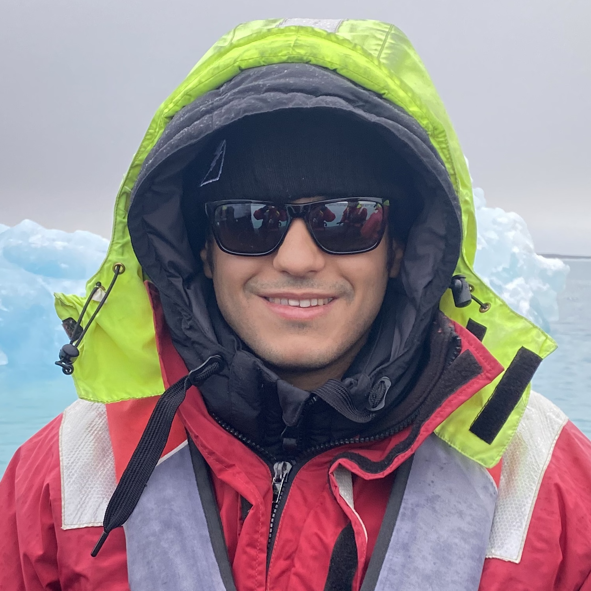

I am a senior research scientist at NVIDIA Research in the AI-Mediated Reality and Interaction (AMRI) group. My research focuses on reconstructing, simulating, and generating 3D worlds, with a particular interest in the intersection of reconstruction and generative modeling: using generative priors to improve 3D reconstruction, and using reconstruction to ground generative models in the physical world. Recent work spans scalable neural scene reconstruction, real-time sensor simulation, and 3D content generation.
I completed my PhD in Computer Science from Carnegie Mellon University where I was advised by Deva Ramanan. During my PhD, I collaborated with Argo AI and Reality Labs Research where I worked with Christian Richardt and Michael Zollhoefer. Before my PhD, I spent seven years at Palantir Technologies in leadership roles across business and product development. I received my BS and MS in Computer Science from Stanford University where I worked with Alex Aiken and Daphne Koller.
Email / Google Scholar / Twitter / GitHub / Pro Bono

A lot of good advice in research is still passed informally through networks. That can make research directions, career transitions, and even basic next steps feel unnecessarily opaque. I try to reduce that gap by setting aside a small amount of time for open mentoring conversations.
Following the example set by Wei-Chiu Ma, Jun Gao, and others, I reserve 1–2 hours most weeks for pro bono mentoring conversations. These office hours are intended for students and early-career researchers who would benefit from candid, practical advice.
I especially encourage requests from:
Conversations are informal and usually 20–30 minutes. I may not be able to provide detailed feedback on full papers, codebases, or application materials in advance.
If a conversation would be helpful, please send me a brief email with a few lines about your background, goals, and the main question you'd like to discuss.